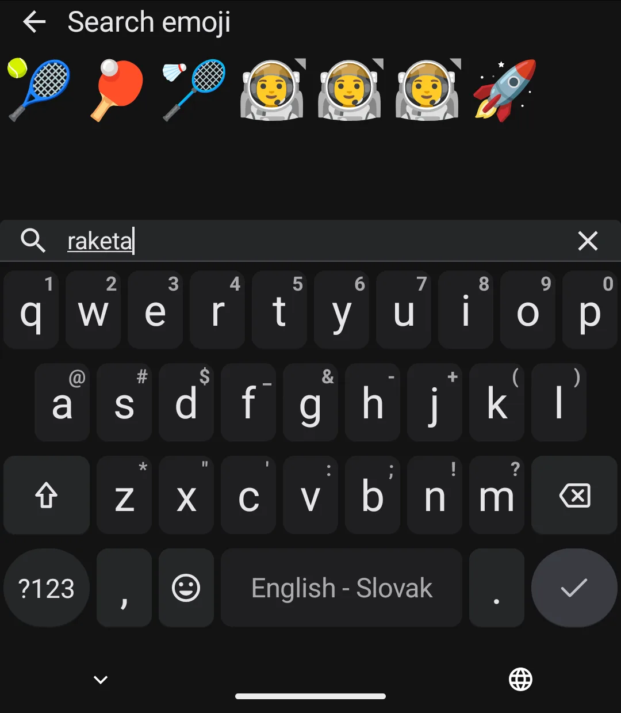

čo vie už dnes
Klávesnica, na ktorú ste zvyknutí. Časti, ktoré inde bežia v cudzom cloude, tu ostávajú v telefóne. Je to beta: na každodenné písanie stačí, ak vám neprekáža občas nahlásiť chybu.
strana a — dnes
- a1
viacjazyčné písanie potiahnutím
V jednej vete potiahnete slová v dvoch jazykoch a jazyk neprepínate. Dnes je to slovenčina a angličtina, ďalšie jazyky pribudnú. Gesto číta FUTO Swipe, náš dekodér doplní diakritiku a podľa predchádzajúceho slova vyberie správneho kandidáta.
- a2
ďalšie slovo odhadne telefón
Malá neurónová sieť odhadne ďalšie slovo podľa toho, čo ste už napísali. Beží v telefóne, nie je žiadny server, kam by sa čokoľvek posielalo.
- a3
diktovanie bez opustenia klávesnice
Ťuknite na mikrofón na konci pruhu s návrhmi a hovorte. Klávesnica si zvuk nahrá sama, z telefónu, Bluetooth slúchadiel, LE Audio slúchadiel aj z načúvacích pomôcok, a Offline Speech to Text ho prepíše priamo v zariadení. Dlhé diktovanie pokračuje aj po minúte.
- a4
ako Gboard
Farby Material You, rovnaké znaky po podržaní klávesu, napísané slovo v strede pruhu, rad číslic v poliach na heslo a žiadne tiché autoopravy.
- a5
emoji podľa ľubovoľnej časti slova
Napíšte do vyhľadávania emoji „aketa“ a nájde sa raketa. Počas písania sa v pruhu ukáže aj zodpovedajúce emoji.
- a6
medzerník ako touchpad
Podržte medzerník a posúvajte kurzor. Ak chcete, môže namiesto toho prepínať jazyk.
- a7
pod kapotou HeliBoard
História schránky, rozloženie na jednu ruku aj rozdelené, motívy, vlastné rozloženia a fyzické klávesnice prišli z HeliBoardu.
strana b — pripravujeme
- b1
Čeština, potom španielčina a nemčina, každá s vlastným slovníkom na písanie potiahnutím a s predikciami
- b2
Menšia klávesnica, ktorej veľkosť a polohu nastavíte na tablete aj na rozloženom telefóne



z telefónu nič neodchádza
Droneboard sa na internet nedostane, lebo mu to Android nikdy nepovolil.
- Žiadne oprávnenie
INTERNET, žiadna analytika, žiadne hlásenia o pádoch. - Nič nesťahuje. Ďalšie slovníky sa importujú zo súboru.
- Zvuk z diktovania ide do Offline Speech to Text v tom istom telefóne a nikam inam.
- Kontakty v návrhoch sú voliteľné a predvolene vypnuté.
Overte si to sami: Nastavenia → Aplikácie → Droneboard → Povolenia. Prístup k sieti tam nenájdete.
ako presne číta ťahy
| test | top-1 | top-3 |
|---|---|---|
| Sada českých gest, knižnica gest od Googlu (ako v HeliBoarde) | 82,4 | 96,3 |
| Sada českých gest, Droneboard | 81,8 | 95,8 |
| Skutočný telefón, 106 zadaných slovenských a anglických slov | 82,1 | 92,5 |
inštalácia
Najjednoduchšie je to cez Zapstore: podpísané verzie a aktualizácie v jednej aplikácii, bez účtu.
- Nainštalujte si Zapstore zo stránky zapstore.dev.
- Otvorte Droneboard na Zapstore a nainštalujte ho.
- Spustite Droneboard a podľa pokynov ho zapnite.
- Na diktovanie si nainštalujte aj Offline Speech to Text.
Zostavte si ho sami zo zdrojového kódu. GPL-3.0.
novinky na nostri
Droneboard píše na nostr, otvorenú sieť, ktorú nevlastní žiadna firma. Najnovšie príspevky načíta váš prehliadač priamo z relayov; táto stránka nemá vlastný server a nenastavuje cookies.
- Profil na njump.me
- droneboard@cypherpunk.today
- Zapy: droneboard@pay.cypherpunk.today
poďakovanie
- klávesnica
- Fork HeliBoardu, ktorý stavia na OpenBoarde a AOSP LatinIME. GPL-3.0; niektoré súbory Apache-2.0 alebo CC-BY-SA-4.0.
- písanie potiahnutím
- Poháňa ho FUTO Swipe (swipe-library, GPL-3.0). Váhy modelu sú pod licenciou FUTO Model Weights License.
- nahrávanie zo slúchadiel
- Nahrávanie cez Bluetooth a LE Audio pochádza z aplikácie Third Ear od toho istého autora.
- diktovanie
- Offline Speech to Text, inštaluje sa zvlášť.
- zoznamy slov
- FineWeb-2 (ODC-By), prefiltrované slovníkmi Hunspell.
- údaje o emoji
- Anotácie Unicode CLDR a dáta Signalu na hľadanie emoji, cez aosp-dictionaries.
- písmo
- PT Sans od ParaType, SIL Open Font License.